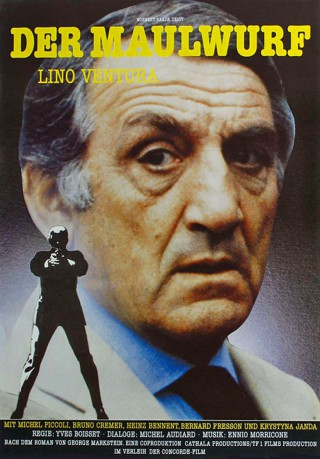
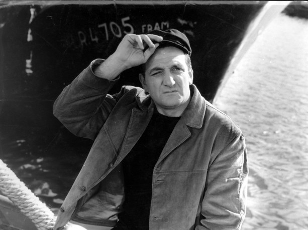
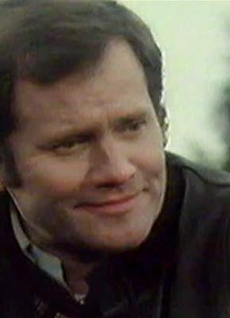
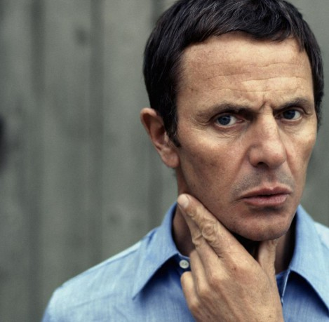

#12041 Der Maulwurf
 
 IMDB-Wertung: 6.6 / 10
IMDB-Wertung: 6.6 / 10  Metascore: 0
Metascore: 0 
Ein französischer Ex-Spion, der zurückgezogen mit seiner Frau in Zürich lebt, erhält den Befehl, wieder aktiv zu werden. Der Grund: Mehrere französische Agenten wurden von Terroristen ermordet. Seine Arbeit als Bankangestellter wird zur Fassade und sein Privatleben gerät in Gefahr. Ein grausamer Alptraum beginnt.
Jahr: 1982
Dauer: 99 Minuten
FSK: 12
Land: Frankreich Studio: Pidax FilmTonspuren:
Untertitel:
Auflösung: 1080p (1808x1080) Größe: 7833 MB
Genre: Thriller, Drama
Regisseur: Yves Boisset
Drehbuch: George Markstein, Michel Audiard, Claude Veillot, Yves Boisset, Michel Audiard
Soundtrack: Ennio Morricone
Darsteller:
-  Lino Ventura als Sébastien Grenier
 Michel Piccoli als Jean-Paul Chance
Michel Piccoli als Jean-Paul Chance- Bruno Cremer als Richard
-  Bernard Fresson als Henri Marchand
-  Heinz Bennent als Meyer
- Krystyna Janda als Anna Gretz
- Yves Boisset als L'adjoint de Richard
- Dieter Moor als Dieter Krauss
- Marc Mazza als Ramos Bavila
- Roger Jendly als Le commissaire Lohmann
- Beate Kopp als La secrétaire de Grenier
- Christian Baltauss als Le bibliothécaire
- Kurt Bigger als Alfred Zimmer
- Jean-Paul Franky als Rudy la blonde
- Daniel Plancherel als L'inspecteur Vogel
- Philippe Brizard als Le collaborateur de Grenier
- Pierre Boffety als Postman
- Ali Lexa als Man in bar
- Jean Reney als
Datei: X:\1982\Maulwurf, Der (1982, FSK12, 1808x1080).mkv seit 16.11.2019
Festplatte: Gemischt-01+Anime
 Es gibt insgesamt 31 Filme in der Gruppe '1982'
Es gibt insgesamt 31 Filme in der Gruppe '1982'